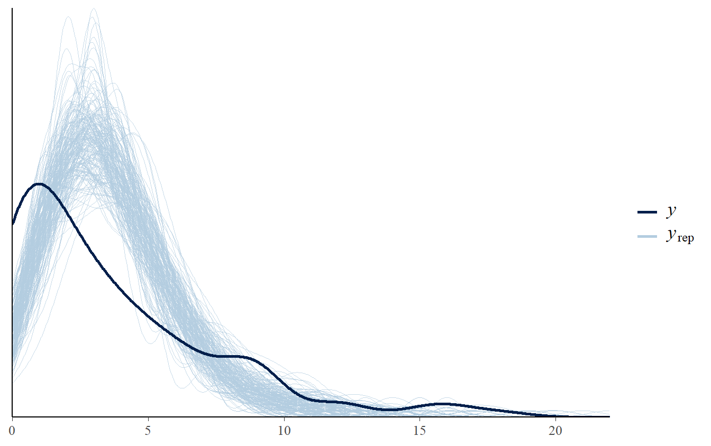
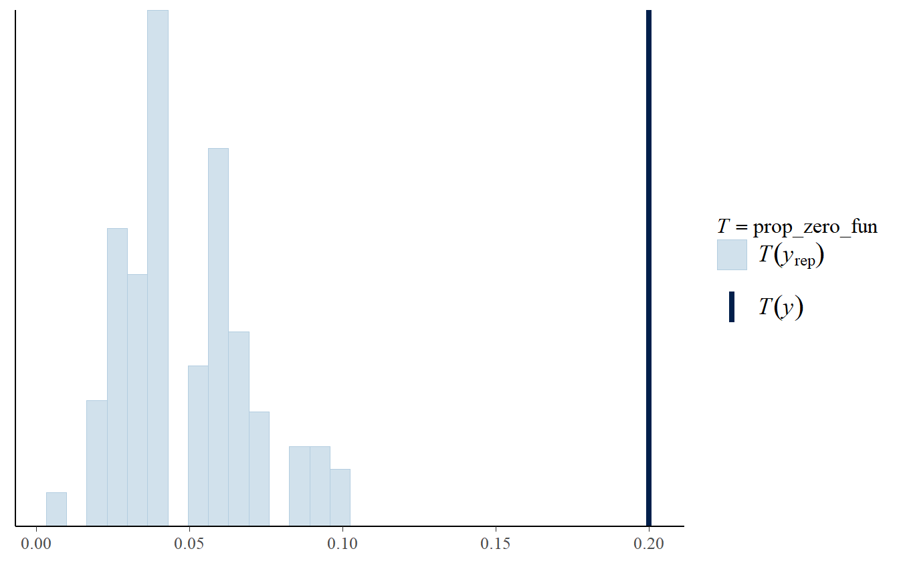
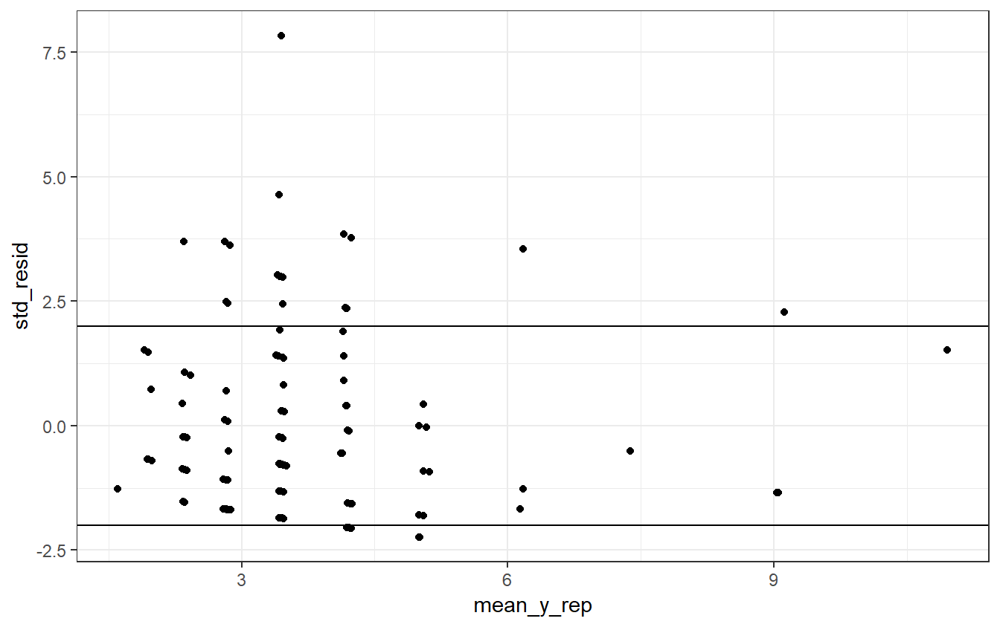
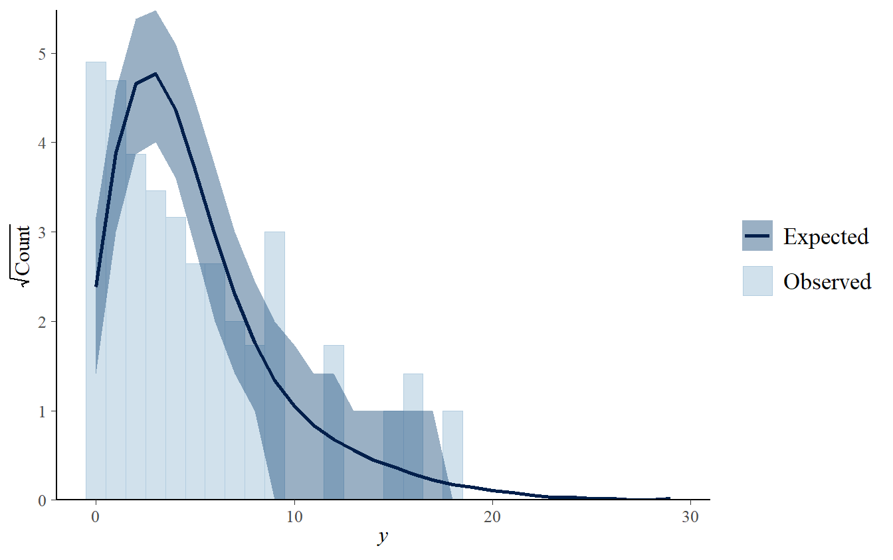
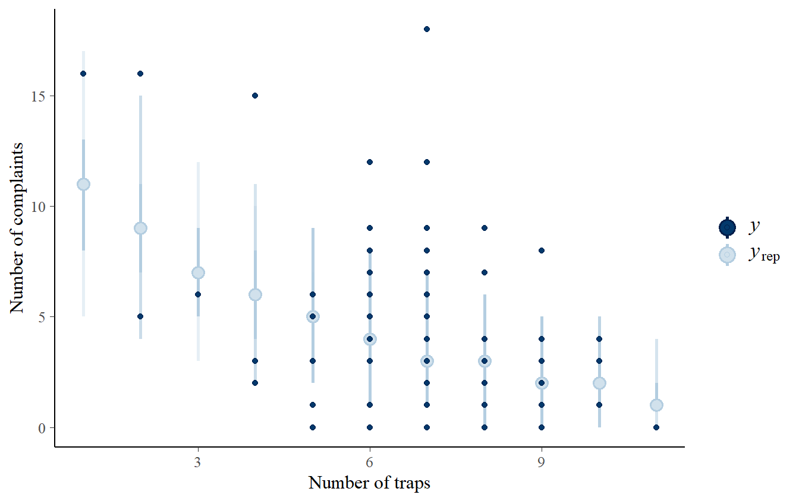
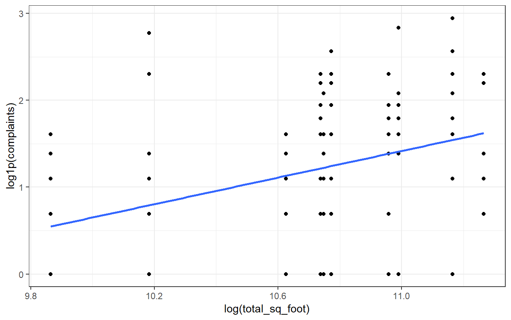
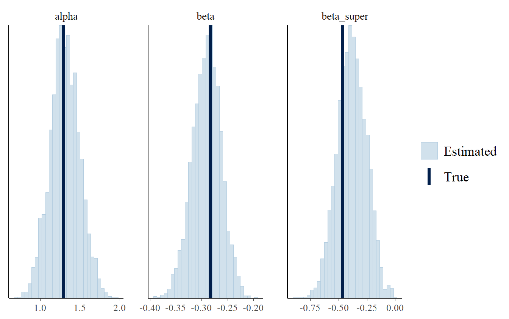
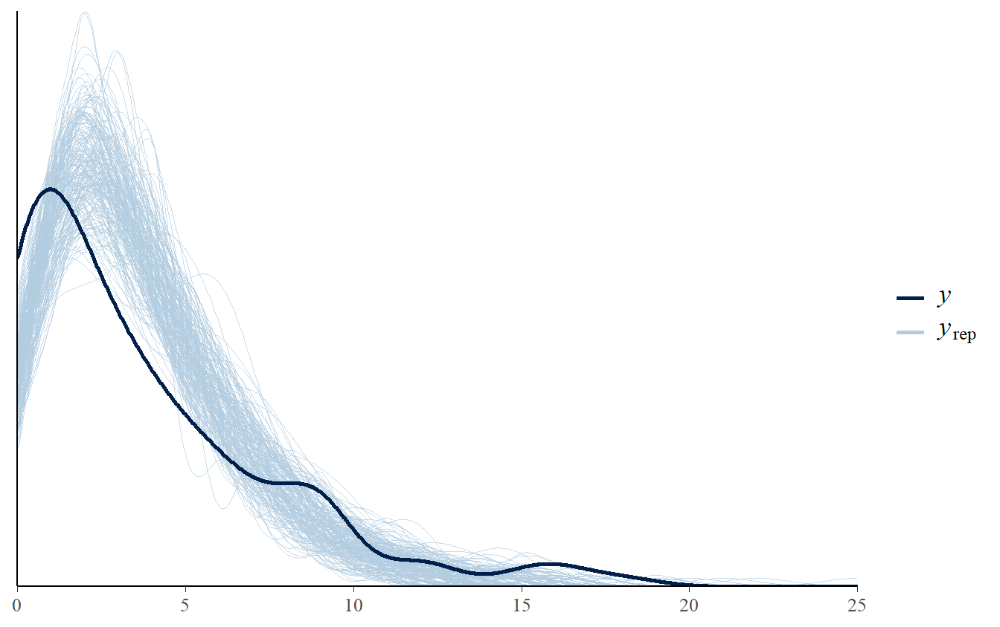
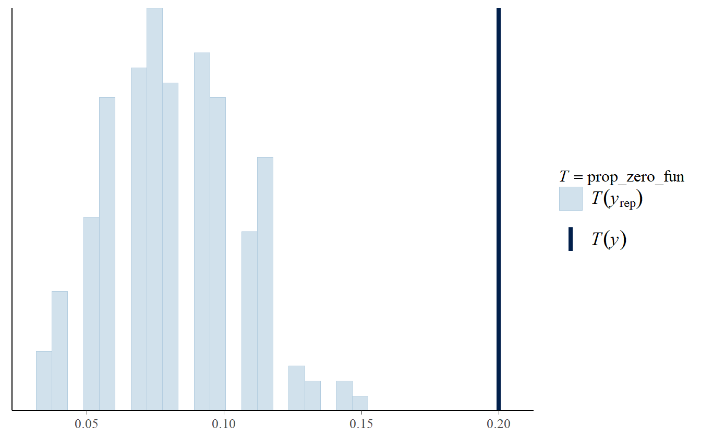
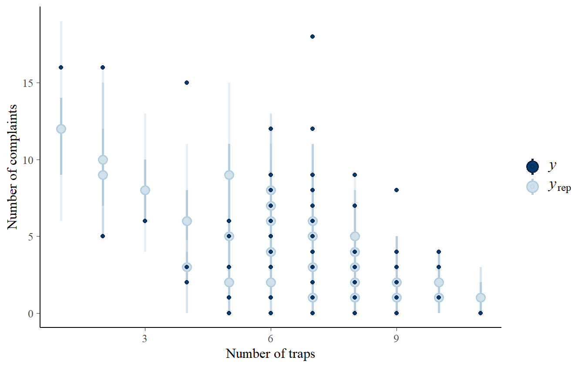

Day 2 Bayesian applied regression models
2.1 Posterior predictive checks
Posterior predictive check is a fundamental step of the Bayesian workflow to check if the fitted model makes sense. It basically works by simulating replicated data from the fitted model and by comparing them to the observed data. Once the simulation has been performed, the following question should arise:
- Are the simulated data plausible with the real data?
- Does our model make sense with our situation?
Simulating fake data from the fitted model means that we must draw values from the posterior distribution of unknown but observable outcome data, i.e.
\[\begin{equation} p \left( \widetilde{y} \vert y \right) = \int p \left( \widetilde{y} \vert \theta \right) p \left( \theta \vert y \right) d \theta \end{equation}\]Drawing from the posterior predictive distribution can be implemented as follows:
Draw \(\theta^{*}\) from the posterior \(p \left( \theta \vert y \right)\)
Draw \(y^{*}\) from the posterior predictive distribution \(p \left( y \vert \theta^{*} \right)\)
If there are differences between the posterior predictive distribution and the empirical distribution of the observed data it means that the model isn’t able to accurately describe our data and it is probably misfitting or overfitting. How can we inspect these discrepancies?
Graphical posterior predictive checks are a valuable tool to assess discrepancies between simulated data and real data.
We can also compare some observed statistics and posterior predictive statistics, e.g. the mean of observed data and the distribution of mean from the data simulated with our model.
In posterior predictive distribution we have many sources of uncertainty: about the parameters, given by the posterior distribution, and about the data, given by their variation and their noise.
Posterior predictive check is used to see if the simulated data range among plausible value. Thus, we don’t want that the simulated data perfectly resemble the observed data, otherwise our model is very likely overfitting.
Let’s come back to the case study of the pest control of apartment buildings. We are going to perform some posterior predictive checks to understand the implications of our simple poisson regression.
To simulate replicated data from our model we need to add the generated quantities block in the Stan program.
/* Simple Poisson model generated quantities*/
/*
* Alternative to poisson_log_rng() that
* avoids potential numerical problems during warmup
*/
functions {
int poisson_log_safe_rng(real eta) {
real pois_rate = exp(eta);
if (pois_rate >= exp(20.79))
return -9;
return poisson_rng(pois_rate);
}
}
// Declare the structure of the data
data {
int<lower = 1> N; // number of observation
vector<lower = 0>[N] n_traps; // number of traps
int<lower = 0> complaints[N]; // number of complaints
}
// Declare the parameters of the model (the goal of our inferemce)
parameters {
// Intercept and the slope of the linear predictor eta
real alpha;
real beta;
}
// Define the structure of the Poisson model: priors and likelihood
model {
// Let's create the linear predictor: eta
vector[N] eta = alpha + beta * n_traps;
// likelihood
target += poisson_log_lpmf(complaints | eta);
// Priors on the parameters
target += normal_lpdf(alpha | log(4), 1) +
normal_lpdf(beta | -0.25, 1);
}
// Predictive posterior distributions in generated quantities
generated quantities {
int y_rep[N]; // replicated y as array with vector of integers
// Simulate data from the fitted modedl
for (n in 1:N) {
real eta_n = alpha + beta * n_traps[n]; // linear predictor
y_rep[n] = poisson_log_safe_rng(eta_n); // replicated complaints
}
}Now we generate posterior predictive values from our model and store them into a matrix.
# Compile the model
simple_poisson_gen_quant_comp <- stan_model(
file = "stan_programs/simple_poisson_gen_quant.stan"
)
# Sampling from the posterior
simple_poisson_gen_quant <- sampling(
simple_poisson_gen_quant_comp,
data = pest_data_list,
chains = 4L,
warmup = 1000L,
iter = 2000L,
seed = mcmc_seed
)
# Get replicated data into a matrix
y_rep_simple_poisson <- as.matrix(
simple_poisson_gen_quant,
pars = c("y_rep")
)
# Check the dimension
dim(y_rep_simple_poisson)#> [1] 4000 120Each row corresponds to a distribution of posterior predicted values given a combination of our parameters \(\theta\) from the posterior \(p \left( \theta \vert y \right)\). Each column corresponds to a posterior predictive distribution of replicated data for one observation in the dataset. Thus, the posterior predictive distribution is like a distribution of datasets.
Let’s plot some draws from the posterior predictive distribution and compare it with the observed data.
# Posterior predictive checks
ppc_dens_overlay(
y = pest_data$complaints,
y_rep_simple_poisson[1:200,]
)
As we can see, simulated data from our model do not resemble very well the distribution of the observed data.
We can also compare some statistics. Given our example, zero complaints is a value of interest for the manager of the company, because it means no complaints. We can compare the proportion of zeros (no complaints) in the observed data with the distribution of zeros from the posterior predictive distribution.
# Function that computes the proportion of zeros
prop_zero_fun <- function(x) mean(x == 0)
# Compare the proportions
ppc_stat(
y = pest_data$complaints,
yrep = y_rep_simple_poisson[1:200,],
stat = "prop_zero_fun"
)
The graph above clearly shows that our model tends to underestimate the proportion of zero complaints.
We can also plot the stanrdized values of the differences between the observed number of complaints and the predicted number of complaints (residuals).
mean_y_rep <- colMeans(y_rep_simple_poisson)
std_resid <- (pest_data$complaints - mean_y_rep) / sqrt(mean_y_rep)
qplot(mean_y_rep, std_resid) +
hline_at(2) +
hline_at(-2) +
theme_bw()
There are more positive than negative residuals, suggesting that our model tends to underestimate the number of complaints.
We can use the rootogram to compare the observed and the expected number of complaints.
# Comparison of observed and expected number of complaints
ppc_rootogram(
pest_data$complaints,
yrep = y_rep_simple_poisson
)
If the model had a good fit, we would had observed similar expected and observed count. However, we can see that our model tends to overestimate when there is a medium number of complaints, whereas it underestimates when there are few or lager complaints.
We can further inspect our model by comparing the observed and predicted number of complaints (with relative uncertainty) across the number of traps.
ppc_intervals(
y = pest_data$complaints,
yrep = y_rep_simple_poisson,
x = pest_data$traps
) +
labs(
x = "Number of traps",
y = "Number of complaints"
)
We can observe that our model predicts very badly the extreme of the data, i.e. few and large number of complaints.
Graphical posterior predictive checks inform us that the model may not be a good choice for our problem at hand. We need to criticize our model and understand if some of assumptions we made can be revised.
For example, building may be very different from each other and it is better to incorporate this information in the model. To see if that makes sense, we can plot the relationship between the squared foot of the building and the number of complaints.
ggplot(
data = pest_data,
mapping = aes(
x = log(total_sq_foot),
y = log1p(complaints)
)
) +
geom_point() +
geom_smooth(
method = "lm",
se = FALSE
) +
theme_bw()
It seems that the bigger the apartment the greater the number of complaints. Maybe bigger building may be subjected to a higher number of roaches, and thus more complaints. We can think the size of the aparment as an initial exposure that likely influnce the number of complaints and we can add it in the model as an offset. Moreover, we can also take into account the level of the apartment in the building. Here we are going to rescale the square foot measure such that it is on a unit scale making computation more feasible.
pest_data$log_sq_foot <- log(pest_data$total_sq_foot/1e4)Following the steps of the Bayesian workflow, we start by simulating fake data from the prior predictive distribution. We can do it in Stan by writing in the program the number of simulated observation in the data block and declaring the priors and the simulated data in the generated quantities block.
/* Generating data from a multiple Poisson regression model*/
/*
* Alternative to poisson_log_rng() that
* avoids potential numerical problems during warmup
*/
functions {
int poisson_log_safe_rng(real eta) {
real pois_rate = exp(eta);
if (pois_rate >= exp(20.79))
return -9;
return poisson_rng(pois_rate);
}
}
data {
// Number of observations
int<lower=1> N;
}
model{
}
// Predictive posterior distributions in generated quantities
generated quantities {
// Declare simulated data
vector[N] log_sq_foot;
int live_in_super[N];
int n_traps[N];
int complaints[N];
// Generate parameters values from the prior predictive distribution
real alpha = normal_rng(log(4), 0.1);
real beta = normal_rng(-0.25, 0.1);
real beta_super = normal_rng(-0.5, 0.1);
// Generate simulated values of the outcome (number of complaints)
for(n in 1:N) {
// Generate fake data
log_sq_foot[n] = normal_rng(1.5, 0.1);
live_in_super[n] = bernoulli_rng(0.5);
n_traps[n] = poisson_rng(8);
// Generate simulated number of complaints
complaints[n] = poisson_log_safe_rng(alpha +
log_sq_foot[n] + beta * n_traps[n] +
beta_super * live_in_super[n]);
}
}
We now simulate fake data from the model.
# Compile the model
multi_poisson_dgp_comp <- stan_model(
"stan_programs/multiple_poisson_dgp.stan"
)
# Sampling from the posterior
multi_poisson_dgp <- sampling(
multi_poisson_dgp_comp,
data = list(N = nrow(pest_data)),
chains = 1,
cores = 1,
iter = 1,
algorithm = 'Fixed_param',
seed = 123
)#>
#> SAMPLING FOR MODEL 'multiple_poisson_dgp' NOW (CHAIN 1).
#> Iteration: 1 / 1 [100%] (Sampling)
#>
#> Elapsed Time: 0 seconds (Warm-up)
#> 0 seconds (Sampling)
#> 0 seconds (Total)# Get the fake data
fake_data_pest <- rstan::extract(multi_poisson_dgp)Now we prepare the data into a list to be passed to Stan.
# Take only numbers from the first iteration
stan_fake_data <- list(
N = nrow(pest_data),
log_sq_foot = fake_data_pest$log_sq_foot[1, ],
live_in_super = fake_data_pest$live_in_super[1, ],
n_traps = fake_data_pest$n_traps[1, ],
complaints = fake_data_pest$complaints[1, ]
)And we fit our model to the fake data. If our model is able to recover the parameters the prior distribution of the parameters than it means that our model is reasonable and we can fit it to the real data. Below the Stan program of the model
/* Multi Poisson model*/
/*
* Alternative to poisson_log_rng() that
* avoids potential numerical problems during warmup
*/
functions {
int poisson_log_safe_rng(real eta) {
real pois_rate = exp(eta);
if (pois_rate >= exp(20.79))
return -9;
return poisson_rng(pois_rate);
}
}
// Declare the structure of the data
data {
int<lower = 1> N; // number of observation
vector<lower = 0>[N] n_traps; // number of traps
int<lower = 0> complaints[N]; // number of complaints
vector[N] log_sq_foot; // log of square foot building
vector<lower = 0, upper = 1>[N] live_in_super; // level of the apartment
}
// Declare the parameters of the model (the goal of our inferemce)
parameters {
// Intercept and the slope of the linear predictor eta
real alpha;
real beta;
real beta_super;
}
// Define the structure of the Poisson model: priors and likelihood
model {
// Let's create the linear predictor: eta
vector[N] eta = alpha +
beta * n_traps +
beta_super * live_in_super +
log_sq_foot;
/*Let's declare our outcome variable and its pdf. Poisson_log
function directly exponentiated the linear prediction*/
target += poisson_log_lpmf(complaints | eta);
/*or equivalently
complaints ~ poisson_log(eta);
*/
/*Let's declare our priors distributions. Let's put some reasonable
priors. In particular, we expect that for higher number of traps
there will be less complaints from people living in the building.*/
target += normal_lpdf(alpha | log(4), 1) +
normal_lpdf(beta | -0.25, 1) +
normal_lpdf(beta_super | -0.5, 1);
/*or equivalently
alpha ~ normal(log(4), 1);
beta ~ normal(-0.25, 1);
*/
}
// Simulate replicated data from the model
generated quantities {
int y_rep[N];
for (n in 1:N) {
real eta_rep = alpha +
beta * n_traps[n] +
beta_super * live_in_super[n] +
log_sq_foot[n];
y_rep[n] = poisson_log_safe_rng(eta_rep);
}
}
# Compile the model
multi_poisson_comp <- stan_model(
"stan_programs/multiple_poisson_regression.stan"
)
# Sampling from the posterior
multi_poisson_fake <- sampling(
object = multi_poisson_comp,
data = stan_fake_data,
chains = 4L,
warmup = 1000L,
iter = 2000L
) Does the model recover the parameters of the prior?
post_alpha_betas <- as.matrix(
multi_poisson_fake,
pars = c("alpha", "beta", "beta_super")
)
true_alpha_beta <- c(
fake_data_pest$alpha,
fake_data_pest$beta,
fake_data_pest$beta_super
)
mcmc_recover_hist(
x = post_alpha_betas,
true = true_alpha_beta
)
Yes! Let’s fit the model to the real data and do posterior predictive checks.
# Prepare the data into a list
pest_data_list_multi <- list(
N = nrow(pest_data),
n_traps = pest_data$traps,
log_sq_foot = sqrt(pest_data$total_sq_foot/1e4), # rescale to unit scale
live_in_super = pest_data$live_in_super,
complaints = pest_data$complaints
)
# Sampling from the posterior
multi_poisson <- sampling(
multi_poisson_comp,
data = pest_data_list_multi,
chains = 4L,
warmup = 1000L,
iter = 2000L,
seed = mcmc_seed
)# Get replicated data
y_rep <- as.matrix(
multi_poisson,
pars = c("y_rep")
)
# Posterior predictive checks
ppc_dens_overlay(
y = pest_data$complaints,
y_rep[1:200,]
)
# Function that computes the proportion of zeros
prop_zero_fun <- function(x) mean(x == 0)
# Compare the proportions
ppc_stat(
y = pest_data$complaints,
yrep = y_rep[1:200,],
stat = "prop_zero_fun"
)
ppc_intervals(
y = pest_data$complaints,
yrep = y_rep,
x = pest_data$traps
) +
labs(
x = "Number of traps",
y = "Number of complaints"
)
The model still has some problems, in particular at the tails of the data: there is still an high number of complaints that our model is not able to account for.
2.1.1 Negative Binomial model
We may criticize the assumption of our model: constant mean and variance across observations. We can use a Negative Binomial (NB) distribution to model the number of complaints allowing for overdispersion, i.e. variance not constant across observations. The model can be formalized as follows:
\[ \begin{align*} \text{complaints}_{b,t} & \sim \text{Neg-Binomial}(\lambda_{b,t}, \phi) \\ \lambda_{b,t} & = \exp{(\eta_{b,t})} \\ \eta_{b,t} &= \alpha + \beta \, {\rm traps}_{b,t} + \beta_{\rm super} \, {\rm super}_{b} + \text{log_sq_foot}_{b} \end{align*} \]
We can write the NB function in Stan as \(\texttt{neg_binomial_2_log}(\text{ints} \, y, \text{reals} \, \eta, \text{reals} \, \phi)\) in Stan. Like the poisson_log function, this negative binomial mass function that is parameterized in terms of its log-mean, \(\eta\), but it also has a precision \(\phi\) such that
As \(\phi\) gets larger the term \(\lambda^2 / \phi\) approaches zero and so the variance of the negative-binomial approaches \(\lambda\), i.e., the NB gets closer and closer to the Poisson.
2.2 MCMC algorithms
Once we have very complex model with high number of parameters it is very difficult to get an analytic approach to sample from the posterior distribution. In such case, the posterior may be very complex and sampling from it becomes very complicated.
Regarding our pest control examples, suppose we want to allow for different intercepts across buildings, or different slopes. Thus, the dimensionality of the parameter space becomes high and doing numerical computation in such domains is very difficult. We need to find something that approximate the “surface” of the posterior distribution of the parameter space, something able to explore the most important region of such distribution.
How can we do when we have a very strange and complicated surface that we don’t know how it looks like?
Markov Chain Monte Carlo (MCMC) algorithms are useful tool to deal with such task. Stan samples from the posterior using the Hamiltonian Monte Carlo (HMC) algorithm, in particular the efficient No-U Turn Sampler (NUTS). For further details on the algorithm, we highly suggest the following readings: Hoffman and Gelman (2014) and Betancourt (2018). Here is a very nice example of how HMC works.
The algorithm may incurs in some problems during the sampling process. If the sampler was not able to explore the surface of the posterior, then we get biased inference. Thus, it is very important to diagnose the sampling process of the algorithm to look for potential patological behaviors that could interfer our final goal.
In the next lesson we will see how to build hierarchical models and how to diagnose the patological behaviours of the algorithm during the sampling.